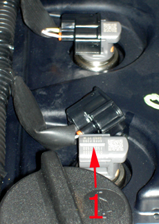

This programming is used for changing the injector number when changing injectors.
This must be done if:
One or more injectors have been replaced.
The engine control module has been replaced.
Note:
The injector code is printed on the injector´s main part. The code is a 30-digit value which is unique for each injector.
The placement is in cylinder order 1-2-3-4 seen from infront. (See picture)

Test prerequisites:
The battery voltage should be >12V.
Ignition on, engine off.
Procedure:
Choose the function: "Injector programming 1, 2, 3 or 4".
A dialogue box confirms the programmed injector code.
Confirm with "OK" to reprogram the injector code.
If the injector code is correct press "No".
Edit the 30-digit injector code printed on the injector (see picture) and press the "OK" button to continue the programming.
If you want to exit the programming press "Abort".
A dialogue box confirms the chosen code, if it is correct press "Yes".
Press "No" to interrupt the programming.
After succeded programming the old and new codes are displayed.
Confirm with "OK" to finish the programming.
Check and clear fault codes that may occure.
CAUTION: If the programming failes, check the fault codes and that the right injector code is entered.